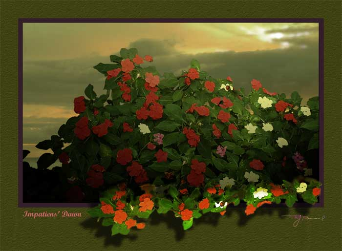

| Impatiens. Paintage, watercolor. These are the impatiens sultanii (walleriana) variety, I believe, originally from Zanzibar. They are now variegated throughout Hawaii with white, orange, red, and violet flowers being the most popular. They are in continuous bloom. We have them planted throughout our yard, but it is a constant battle against slugs and snails that love the succulent flowers. |